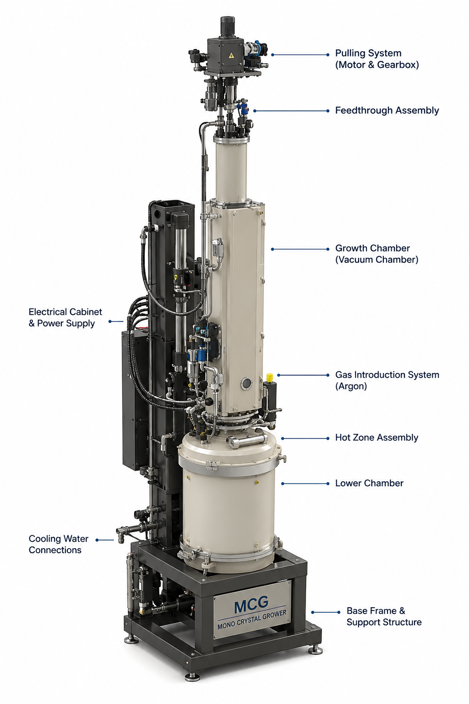
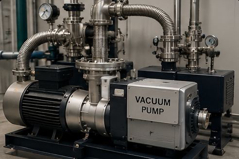
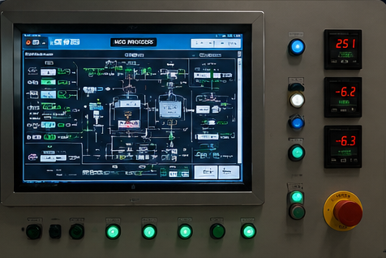
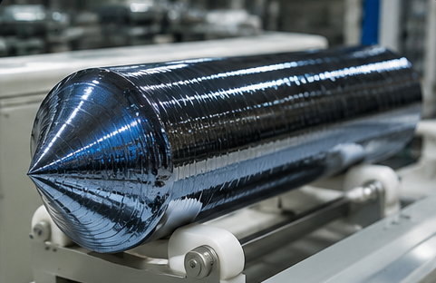
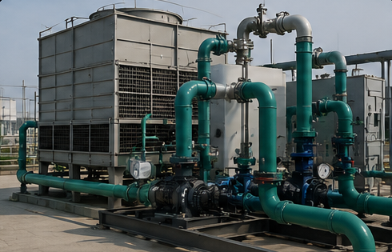

Industrial Gallery

MCG Machine
Mono Crystal Grower used for silicon crystal growth.

Hot Zone Assembly
Hot Zone Assembly Components.

Vacuum System
Vacuum Generation & Control System.

Control Panel / HMI
Process Monitoring & Control Interface.

Silicon Crystal / Ingot
Final single crystal silicon ingot produced through the Czochralski crystal growth process.

Cooling System
Cooling Water Circulation Network.